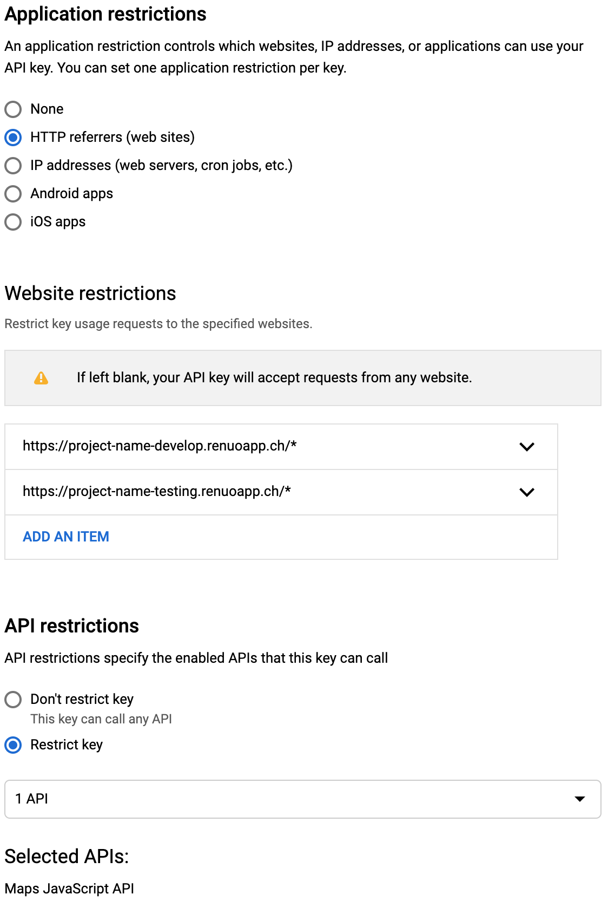

Google APIs
-
If you need Google APIs in your project (e. g. Google Maps) proceed to the Google Cloud Console.
-
Create a project named
[project-name]under the renuo.ch organisation and use that project for all your environments. -
Attach the wg-operations billing account
-
Choose the correct resource folder
clientsfor client projectswg-operationsfor persistent internal things (e.g. Renuo Dashboard)tmpfor trials (e.g. learning week, presentations)system-gsuiteis for Google app script

Before continuing, make sure that your new project is selected in the top navigational header of the Google Console.
Maps JavaScript API
API key generation
In order to user the Google APIs you will need to generate new credentials. Because we are using only one project per application, but would like to separate the usage in development from the one in production, name the keys like so: maps-main and maps-develop. Because we might need a key to also test the map locally, add a separate one named maps-local.
API key restrictions
To prevent quota and key theft, we need to add some restrictions to our keys. There are two types of restrictions: Key restrictions and API restrictions. For the develop API key add the following ones:

For main, enable only the specific domain and the renuoapp.ch domain.
For the key we use locally, enable the specific localhost domain (project-name.localhost).
Geocoding API
API key generation
As for the JS API, create two different keys for the two environments. For this API, name the keys like this: geocoding-main and geocoding-develop.
API key restrictions
Because the Geocoding API key doesn't support HTTP referrer restrictions (which isn't a problem anyway since the key won't be exposed), you only need to add an API restriction, restricting the key to the Geocoding API.